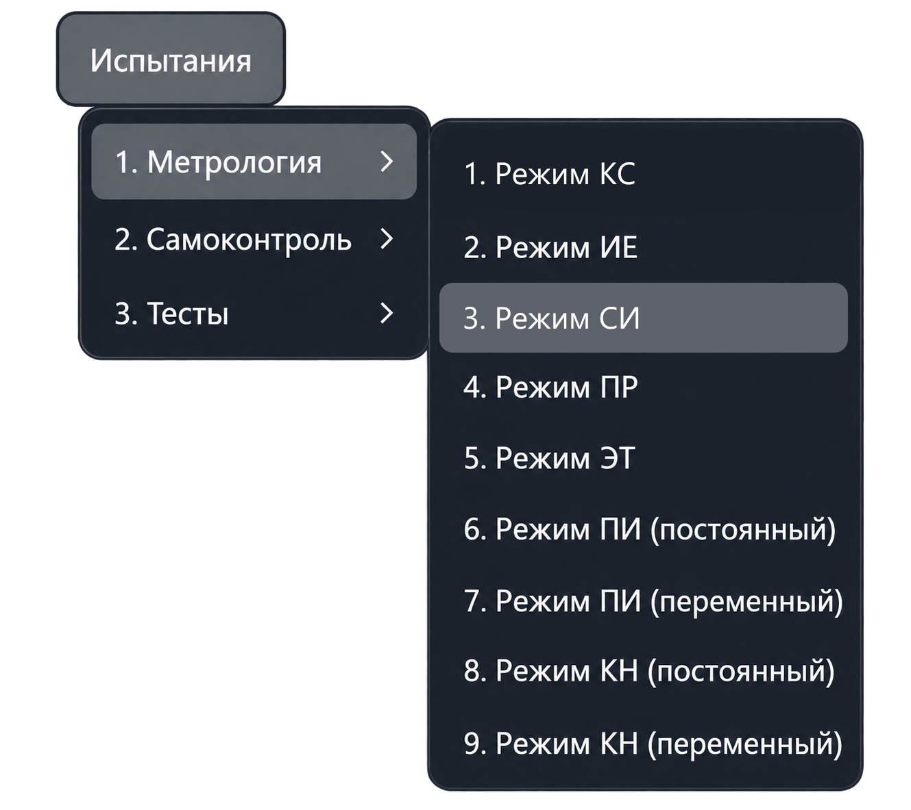
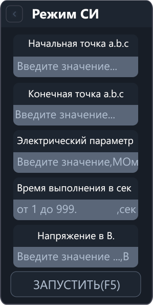

Режим СИ
Режим СИ проверяет измерение сопротивления изоляции с помощью установки проверки прочности изоляции в режиме измерения сопротивления изоляции. Приложение сравнивает результат с заданным эталонным сопротивлением и рассчитывает погрешность.
Откройте «Испытания → Метрология → Режим СИ». Команда открывает рабочую вкладку; измерение запускается отдельно.


Параметры
| Поле | Что указать |
|---|---|
| Начальная точка a.b.c | Первую точку подключения эталонного сопротивления. |
| Конечная точка a.b.c | Вторую точку подключения эталонного сопротивления. |
| Электрический параметр | Значение подключённого эталонного сопротивления в мегаомах (МОм). |
| Время выполнения в сек | Время измерения в секундах. |
| Напряжение в В. | Испытательное напряжение в вольтах. |
В адресе a.b.c указываются номер шасси, номер модуля коммутации
и номер точки. Используйте фактические точки подключения эталонного сопротивления.
Сопротивление задаётся в МОм: 1 МОм = 1 000 000 Ом. Допустимые время и напряжение зависят от возможностей настроенной установки; приложение проверяет их перед измерением.
Порядок работы
- Подключите эталонное сопротивление к выбранным точкам системы.
- Введите начальную и конечную точки.
- Укажите эталонное сопротивление в МОм, время измерения в секундах и напряжение в вольтах.
- Нажмите «Запустить» или F5 в активной вкладке режима.
- Просмотрите результат и погрешность в протоколе. Для повторного измерения используйте действие повтора в запросе приложения.
Ввод параметров сам по себе не запускает измерение. Если приложение сообщает об ошибке ввода или подключения, проверьте указанную причину перед повторным запуском.
Что выполняется после запуска
Приложение проверяет параметры и наличие необходимого оборудования, подключает аппаратуру и настраивает коммутацию заданных точек. Затем переводит установку в режим измерения сопротивления изоляции, задаёт напряжение и время и выполняет измерение.
Результаты
- Измеренное сопротивление — результат измерения сопротивления изоляции.
- Допустимый диапазон — границы, рассчитанные для заданного эталонного значения.
- Погрешность — разность измеренного и эталонного сопротивления, в МОм.
В метрологическом режиме СИ проверяются обе границы допустимого диапазона включительно. Выход за границы отмечается в протоколе.
Если в серии выполнено не менее двух измерений, при завершении приложение выводит сводку максимальной отрицательной и положительной погрешности.
Режим СИ в меню «Метрология» предназначен для проверки измерений по эталону. Это отдельный режим, для которого не требуется открывать или транслировать программу контроля.
Другие режимы описаны в разделе «Меню „Метрология“».